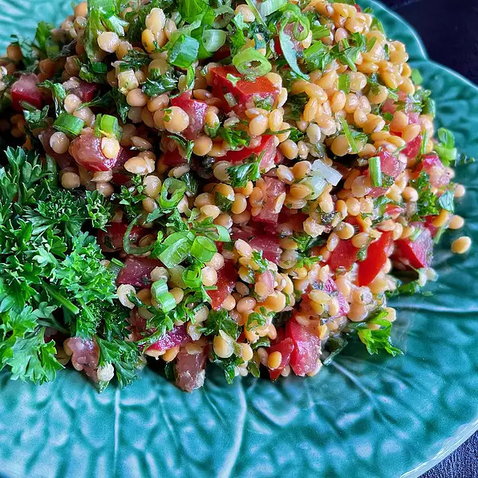

Red Lentil Salad with Fresh Herbs

Description
Tired of lettuce salads? Enjoy this light, fresh salad, inspired by classic tabbouleh flavors. Cook and drain
red lentils, then add fresh herbs, scallions, and Roma tomatoes. Toss with a light dressing of extra-virgin
olive oil and lemon juice, garnish with scallion greens, and enjoy for lunch or dinner.
Ingredients
- 1 (14.5 ounce) can vegetable stock
- 7 ounces red lentils, picked over and rinsed
- 1 cup minced fresh parsley
- ½ cup minced fresh mint
- 2 medium chopped green onions, white and green parts separated
- 2 medium Roma tomatoes, seeded, diced
- ¼ cup extra-virgin olive oil
- 1 medium lemon, zested and juiced
- salt to taste (optional)
Steps
- Bring vegetable stock to a boil in a saucepan and add drained lentils. Stir and reduce to a simmer.
Simmer uncovered, for 7 to 8 minutes. Lentils will be slightly undercooked. Drain, and allow to cool,
about 30 minutes.
- Place cooled lentils in a large mixing bowl and add minced fresh parsley and mint. Add white parts of
the green onions, reserving the chopped greens for the garnish. Add tomatoes.
- Combine extra-virgin olive oil and zest and juice of a lemon in a small bowl. Stir to combine, then pour
over the salad and toss. Cover and refrigerate for at least 30 minutes, before serving.
- Before serving, taste and add salt, if desired. Garnish with reserved chopped green tops of green
onions.